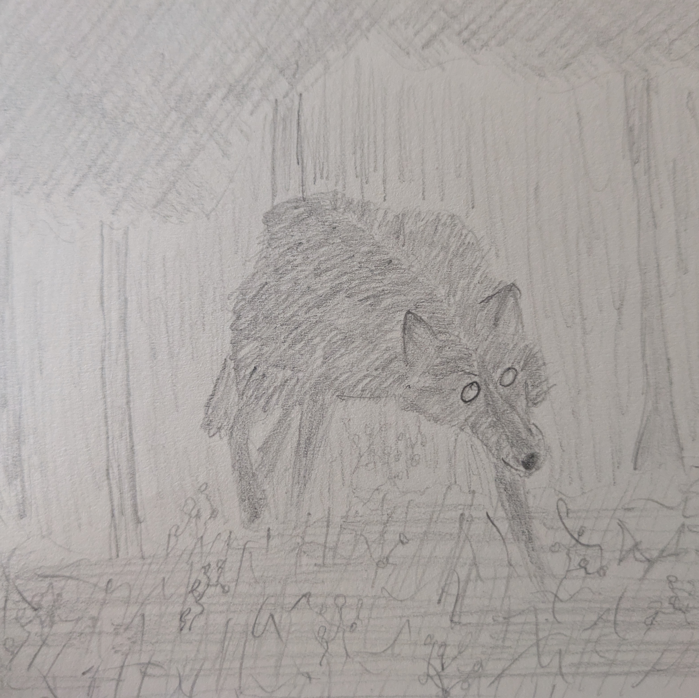

Glimpsing The Black Shuck
My son is now three. He’s taken to staging little traffic accidents with his toy cars. I’m sure this is typical of toddler lads, but I can’t help but feel a twinge of sadness whenever it happens. There’s a part of me that wonders if his preoccupation is a product of how central my accident was to his first few years.
One thing I’m quite certain of is that the accident is still very much a focus of my life. I don’t want it to be, and I’m hoping that by writing about it once more, in more detail than I’ve done thus far, I’ll be able to lessen its grip on my psyche. For me, this is an attempt at processing a horrible thing that happened. For you, my dear hypothetical reader, it might well just be a massive trauma dump you didn’t ask for. Feel free to skip this one.
A warning: there will be graphic discussion of life-threatening injuries and mental illness. We’re drawing on dark magick here today. It’s okay if you’re not game. But if you are, then join me here in this circle while I light a blue candle and summon my demons.
That morning
November 23rd, 2023. I got on my bike just before 4am. It was an early shift week, only my second day back after a week off with a chest infection. The hour-and-change ride up to Cambridgeshire from Essex was taxing, particularly in winter, but I had made it work for some months already. We’d moved farther south in search of cheap rent shortly after the birth of our son. My bike was a retro-style Chinese 125cc, a modest little chugger that I adored. The roads were clear that morning. Always were at that time of day.
Shortly before I hit Horningsea, the last village before my destination, I got caught at some temporary traffic lights positioned for some long-running road works. It felt a little absurd sitting there, waiting for a green light on a totally empty road. I took the opportunity to check the time: 4:45. Cutting it close considering I started my shift at 5. The light went green and I wove my way through the village, careful to occupy a gear that’d keep my revs — and hence volume — low and thus have the least chance of waking anyone at that disgustingly early hour.
As I reached the other end of the village and the road transitioned to a 50mph limit for the stretch that connects Horningsea to Waterbeach (my destination), I spotted headlights much farther up the road, round the broad left bend. I didn’t think much of it. I simply opened my throttle and accelerated up towards the speed limit.
As that leftwards bend in the road approached me, so did the lights. We met on the turn.
He was on my side of the road.
I had the longest microsecond of my life in which to act. Clutch in, slam brakes, pull handlebar roughly to one side, aim to try and crash into the roadside brush.
It was fruitless, of course. That car and I collided head-on and my world was knocked out of my skull.
Time had no meaning. I hung in some other place, suspended in light, no real sense of anything. There was The Light, and there was the world. I fell back down to the world, crashed into my body, felt a profound moment of euphoria. I knew I’d be unpacking that, hanging in The Light, for a very long time.
But first, more urgent matters required my attention.
As my senses returned, I took stock of my situation. I felt wet, warm, and sticky. There was a vivid stench of copper and engine oil, blood and grease. The euphoria faded and I knew I was fucked. My right arm tingled and burned. I could just about wiggle my fingers but otherwise it was useless. My head hurt. I felt sick and faint. But all of that was nothing compared to my lower body.
Vicious splinters of agony pushed into my left leg, my lower back, my pelvis and my organs. I couldn’t move much, though even if I had full command of my legs my nausea would have made standing a non-starter anyway. So, I accepted my place on the ground, in the wet grass in that November predawn.
It occurred to me that I was entirely alone. I wracked my brain, tried to piece together how I’d gotten to where I was. It took several moments for me to recall the car – no sight of it. The crash – debris everywhere. My heart quickened and fear drowned me. I suppose I owed that fear to the event and hadn’t had time to pay the bill before the impact.
I managed to call out for help a couple of times before I lost consciousness again.
When I next awoke, I was not alone. A thin man with glasses was near me, and one or two others slightly further away. They’d been woken by the crash and then heard me call for help some time afterwards. While this man attended to me, a friend of his was on the phone to emergency services. With some persuasion, I managed to convince the guy to help me get my helmet off. It was making it hard to breath, what with it being full of blood. I tried to use my right arm, that was a mistake. It had more bends in it than would be considered traditional; an extra elbow halfway between the original and the wrist.
Again I fell unconscious. When I woke up, the air ambulance was there. Paramedics were cutting my clothes off me, assessing the damage. They appeared a little surprised that I woke up. I believe there were questions about what had happened as well as about my medical history, though the specifics escape me.
Before long, the police turned up. Two officers stood over me, the light from the air ambulance behind them, while the paramedics hooked me up to a generous supply of blood and a decent hit of something that made me care less about the pain. They did the usual questioning, those silhouettes in black and chequers, and faded into shadow before long. I insisted that I should call my wife, the good Samaritan who’d answered my call for help informed me that I’d already done so. He also mentioned that there was a licence plate found nearby. That would be what lead to the other driver being identified.
It’s possible I passed out again. Hard to say. What I can say is that I was transported to A&E in a regular ambulance rather than the air ambulance’s helicopter; a crushing disappointment. I don’t anticipate having another opportunity to ride in one of those.
The Hospital
At the hospital, I was in resuscitation for around eight hours. My wife came after dropping off my son at her mother’s house. It was something of a rough morning, all in all. They failed to knock me out when they were sorting my arm out (not for lack of trying, the drugs didn’t quite take). Sorting my arm out at that early stage basically meant three largish men pulling it to get the exposed radius and ulna to slide back into my ruined flesh. If you’ve never seen your own bones, I’d very much not recommend it. They’re not as white and clean-looking as you’d hope.
Eventually I was moved into a ward, late afternoonish I believe. I was alone for a time once my wife returning to her mother’s house to care for our son. I passed the time by staring at the ceiling and trying to piece together my brief sojourn into the netherworld. Due to an oversight, nobody topped up my pain meds during the night. That was rough. It was the first time I realised the extent of my injuries, I think.
What followed was 27 days of a stretched health service trying to put my body back together while my mind started to unravel. The nightmares and flashbacks started immediately. There were surgeries.
They put me under and reassembled my shattered pelvis with the aid of a couple of dozen titanium implants. I’d had an open book pelvic fracture, which was the cause of my massive internal bleeding (that’s the actual thing that came closest to killing me. I’d lost enough blood for my heart to just give up, which may or may not be why I literally ‘saw the light’). My sacrum was split in two, one of my iliums was smashed up, my pubic symphysis had become a pubic symphysisn’t, and I’d sustained damage to my urethra, testicles, bowel, and bladder. Essentially, that part of me had been entirely crushed.
As well as the pelvic reassembly, they plated my arm and stitched up the gaping holes in various locations. I was fitted with a catheter that I’d have for the duration of my stay, an errant testicle was reattached after being evaluated and judged to be viable, and a shunt was put into my groin to allow the residual swelling and internal bleeding an escape route.
Fun fact: in cases like this, among the first things done once a trauma patient is stabilised is a trauma CT to see what they need to fix. This CT covers the body from just above the knees and up. This is why I didn’t know my lower left leg was broken and the knee was fucked for a couple of weeks. Once that issue was identified, I got some more titanium implants there as well as a synthetic bone graft, which I didn’t know was a thing. I total 34 implants at this point.
On the wards, life was strange. I made friends with the other patients to some degree, in particular with a somewhat unhinged elderly poet who was on the bed opposite me. I still think of him often and hope he’s well. I think that he kept me sane, to some degree.
I got a line put in so they could keep me on IV opiates 24/7. A regular catheter didn’t work, my body kept pushing them out, so they had some bloke run a long tube right into my torso via a vein in my arm. That felt bloody weird going in, somewhat worse coming out a few weeks later.
I got moved around a bit after the second week due to the needs of the hospital and various COVID outbreaks, one of which resulted in me being isolated for a week thanks to a positive test. That was hard to cope with. But cope I did.
The fourth week, which was roughly two weeks before Christmas, was when things started to turn around. I was consistently able to wash and dress myself, my catheter got taken out, I got the line taken out and my pain med regimen drastically reduced, and talk began of me going home.
Home Time
I’d leave on the 27th day, in the end. This was after being told I was going home, getting everything ready, and then being told that I actually needed to stay longer and that me being told I was on my way out was a miscommunication. I discharged myself at that point. It was the 19th of December and I would not be missing my son’s first Christmas. No chance.
At home, things were hard. It was months before I could walk. I was wheeled about the house in a makeshift wheelchair (a commode with the hole covered up). I got visits from physiotherapists and the police, got phone calls from clinical psychologists and lawyers and insurance people. It was incredibly stressful. We weren’t entirely sure how we were going to make ends meet since I would need to be off work for some time, but my wife handled the financial details and friends and family pitched in where they could.
In particular, a large group of my fellow horror writers all got together and dropped a big chunk of change on us while I was still in the hospital. These are people I only know from the internet and they did that without being asked. I’m so incredibly thankful for that.
Eventually, I got walking with crutches, and then with a cane, and then unaided. I returned to work around six months after the accident, made it almost four months before I had to go off again because I went entirely bananas.
Headfuckery
I started getting therapy, paid for by the insurer of the other party in the accident. They’ve paid for a lot of my care, actually, and done a lot besides to try and fix my shit. But the therapy is the salient bit. I desperately needed it. I’d come close enough to death to tickle the Grim Reaper’s taint and the fact that it was a hit and run had shaken my faith in humanity in a big way. As well as the typical post-traumatic symptoms (flashbacks, mood swings, etc), my paranoid tendencies had coagulated into straight up delusion. I was losing time, convinced myself I was being watched and followed by weird goblin-like men who may or may not have lived in trees, and I was seeing people’s faces melt when I made eye contact with them. For the most part, I was able to parse reality still, able to talk myself down.
Until I couldn’t.
I got really fucking crazy for a week there. I know why. I did it to myself, in many ways. I’d rushed to try and return to my previous life. I already had a new motorbike, was already commuting to work on the same route. This was too much.
I had one of my dissociative spells on the way to work one day, came back to myself just before the bend where the crash had happened. And there, waiting for me, was The Black Shuck. One of the hounds of hell, a psychopomp that English legend says is an omen of death. It’s something of a folkloric mascot of my part of the world, and I’ve always been fascinated by the legends. Seeing it was a bit testing though, I must say.

Something like this
What followed was a week of looking over my shoulder, closing all the curtains because they could be watching, trying to think in foreign languages in case they were listening, and seeing faces in every bush and shadow, hearing whispers everywhere I went. Eventually I got myself a mental health crisis appointment and a prescription for antipsychotics. I’d be on those pills for a year, all told. EMDR would help with the PTSD symptoms and I’d return to work again four months after my little psychotic spell.
Now
Now it’s been some time. I’ve had a lot of therapy, a lot of physio, lots of assessments. I have PTSD with secondary psychosis, I have chronic pain, I’m likely to need at least a couple more surgeries on my knee and maybe one more each for my back and my arm. I’m getting by. It’s hard but I’m doing it. I have my family, my job and my writing community serving as anchors and motivation.
I’m trying to get back in shape. I don’t know how realistic it is to get back to running races or competing in strongman at this point, but I’m trying to at least be more capable than I am today. The nerve damage, weakness and chronic pain makes things difficult but I keep trying. Each try sucks a little less.
I’ve learned to live with paranoia and visual glitches. My reality testing is solid and that stuff comes and goes anyway, mostly I’m fine. I’m not back to riding motorbikes yet and I find being in or even near cars very difficult, but I’m coping okay on a day-to-day basis.
The guy who hit me is in prison. He pleaded guilty so there was no trial. I didn’t go to his sentencing. My wife went with her sister. I get why she did, but I knew I wouldn’t get anything out of it. The guy had admitted that he didn’t stop because he didn’t want to be found driving on heroin, he was going to be punished, I just didn’t need that whole event. I went to work that day. It was normal. Normal is good.
Closing The Circle
I should probably end this thing, right? I don’t really know how, but I’m trying to focus more on the things I’m grateful for than the things I struggle with, so I’ll do that. I’ve already mentioned them, it’s my family (specifically my wife and my son), my job (who were incredibly supportive throughout the whole ordeal), and my horror writing community.
Sitting here now, writing this out, is more than a little cathartic. This is very obviously a post for my own benefit rather than for readers, but I would just like to say thank you, dear hypothetical reader, if you made it this far. Or if you didn’t. Either way, this sort of thing is helpful.
That’s all from me.
Toodles,
–Antony F.